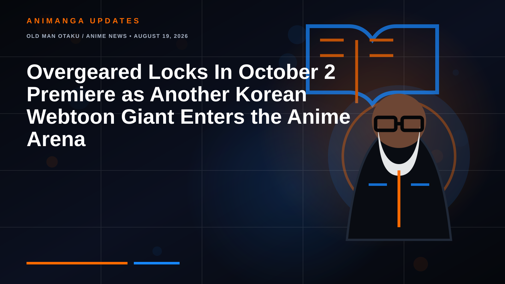

OLD MAN OTAKU / ANIME NEWS • AUGUST 19, 2026
Overgeared Locks In October 2 Premiere as Another Korean Webtoon Giant Enters the Anime Arena
The second full trailer confirms the date, six additional cast members and both theme songs. The bigger story is where Overgeared fits in anime's accelerating Korean-source pipeline.

Overgeared now has a date. The television anime adaptation will begin broadcasting in Japan on October 2, 2026, turning what had previously been an October window into a firm Fall 2026 appointment.
The new announcement arrives with the anime's second full promotional video and a fresh key visual, while also filling in more of the cast and music lineup. For readers who have watched Korean web novels and webtoons move from digital hits to international animation properties, Overgeared is also part of a much larger shift.
What the New Trailer Confirms
The second trailer accompanies the October 2 broadcast date and previews a larger portion of the cast around Grid. Six additional performers were announced: Riho Sugiura as Jishuka, Masaaki Mizunaka as Toban, Ko Bonkobara as Regas, Masaya Fukunishi as Vantner, Kohei Amasaki as Pon and Junichi Toki as Faker.
The music is now set as well. Re:name performs the opening theme, SATISFY, while TAO performs the ending theme, Ray of Emotion.
Crunchyroll has previously confirmed that it will stream the series, giving Overgeared a major international platform as the Fall season begins.
So What Is Overgeared?
Overgeared began as a Korean web novel by Saenal and later became a webtoon adapted by Monohumbug, REDICE STUDIO and Team Argo. Its protagonist, Shin Youngwoo, better known in-game as Grid, is an unlucky player in the virtual-reality MMORPG Satisfy.
His fortunes change when he obtains the legendary class Pagma's Successor. The class gives him extraordinary blacksmithing potential and access to equipment that can reshape his place in the game's hierarchy. That basic setup makes Overgeared easy to mistake for another power-fantasy story about a player receiving an unfair advantage. Its real engine, however, is the long transformation of a deeply flawed player into someone capable of carrying the weight that comes with his abilities, reputation and relationships.
The Production Team Has Experience With Game-World Fantasy
J.C.STAFF is handling animation production, with Ayako Kono directing. Kenta Ihara is responsible for series composition, Ryosuke Tanigawa is the character designer, Yoshiaki Fujisawa is composing the music and Yoshikazu Iwanami serves as sound director.
Kono's credits include Sword Art Online Progressive: Scherzo of Deep Night, making the assignment especially interesting for a series built around an enormous virtual game world. The challenge will not simply be making Satisfy look impressive. Overgeared's appeal depends on making its systems, crafting, equipment and social hierarchy understandable without allowing explanation to smother the story.
Another Major Manhwa-to-Anime Test
Overgeared joins a growing list of Korean-origin properties crossing into Japanese animation. Solo Leveling demonstrated how enormous that ceiling can be. Tower of God helped normalize the idea earlier, while more recent adaptations have continued testing how well webtoon storytelling translates into seasonal anime.
That matters because the adaptation pipeline is no longer a novelty. Studios, publishers and streaming services now have evidence that Korean digital fiction can generate audiences far beyond its original platforms.
But that success creates pressure too. Viewers will compare every new adaptation with the biggest examples, especially in action quality, pacing and visual polish. Overgeared has an enormous amount of source material, so the first season's real job is not to race through it. It needs to convince viewers that Grid's progression is worth following for the long haul.
Why October 2 Matters
A firm premiere date moves Overgeared out of the vague "coming this fall" pile and into direct seasonal competition. Fall anime schedules are typically crowded, and October 2026 is already shaping up as a busy window.
That means Overgeared needs a clear identity quickly. The crafting angle can help. Grid is not merely acquiring stronger weapons from someone else. Blacksmithing is central to his legendary class and to the fantasy of becoming valuable inside Satisfy. If the adaptation gives that process visual weight, the series can separate itself from game-world anime where equipment is little more than a stat screen.
The Old Man Otaku Take
Overgeared has the ingredients for a very easy sell: an unlucky protagonist, an absurdly valuable class, a giant VR world, legendary gear and a source property that already comes with a substantial readership.
The more interesting question is whether the anime understands that Grid's rough edges are part of the point. His rise is more satisfying if the adaptation lets him begin as the frustrating, desperate and often selfish player he is supposed to be rather than sanding him into a generic hero immediately.
October 2 is therefore more than a release date. It is the next big test of how confidently anime can keep expanding beyond Japan's traditional manga and light-novel pipelines and into the enormous Korean web-fiction ecosystem.
RogueVerse takeaway: Overgeared is no longer just a Fall 2026 possibility. October 2 is locked, the cast is growing, the music is set, and another major Korean webtoon is about to test how much room anime audiences have for the next digital-fantasy heavyweight.
Overgeared, its characters, names, official artwork and associated marks belong to their respective creators, publishers and production rights holders. RogueVerse Studio claims no ownership of the franchise. Third-party names are used for editorial reporting.